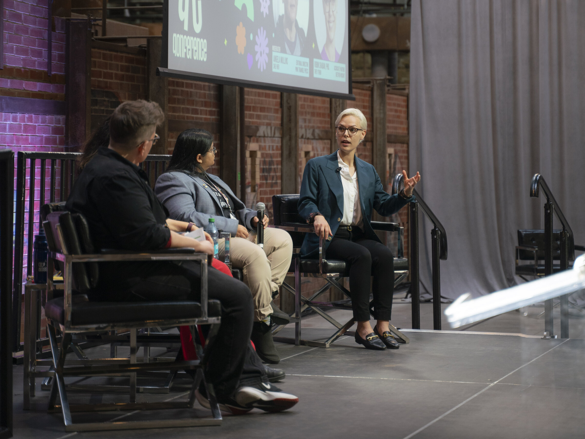

Bio
Robin Shaban is an economist and researcher with expertise in competition law, regulation, geopolitics and competitive strategy across Canadian and international markets. As a Partner at 2R Strategy, Robin produces commissioned research and decision support for investors and strategy teams. This work includes sizing markets and quantifying the economic value of specific opportunities, assessing regulatory and geopolitical risk for a sector, market or transaction, and analysing competitive dynamics: who the competitors are, how concentrated the market is, where the barriers to entry sit and how pricing power is likely to shift.
The research draws on primary and quantitative methods. Engagements typically involve interviews with industry participants, officials and subject matter experts, and the construction of quantitative models for costing, forecasting and scenario testing.
This expertise in competition law is grounded in enforcement experience and academic research. Robin previously served as a Competition Law Officer at the Competition Bureau of Canada. Their doctoral research examined the efficiencies defence in Canadian and international competition law, and that research, together with their testimony before parliamentary committees and studies commissioned by Canadian think tanks and the Government of Canada, informed the 2022 to 2024 amendments to the Competition Act.
Robin has a governance background in both corporate and non-profit settings and holds the ICD.D designation from the Rotman School of Management at the University of Toronto. They are Secretary of the Board and a founding member of the World Interoperability and Trust Organization, an international NGO based in Geneva that promotes the mutual recognition of digital trust and identity standards. They are also co-founder and Chair of the Canadian Anti-Monopoly Project, which provides public education on competition policy in Canada. Robin is a Fellow at the Public Policy Forum and a Globe and Mail Changemaker.
Academic credentials include a doctorate in public policy from Carleton University, a master's in economics from Queen's University and a bachelor's in economics from the University of Alberta. Robin is based in Toronto.

Robin holds the ICD.D designation from the Rotman School of Management and serves as Secretary of the Board of the World Interoperability and Trust Organization, which they helped establish. Through that role and as Chair of the Canadian Anti-Monopoly Project, Robin brings experience in competition policy, regulatory risk and digital trust governance to board work.